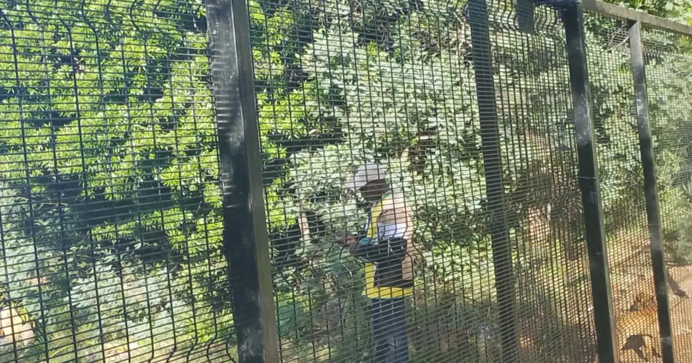
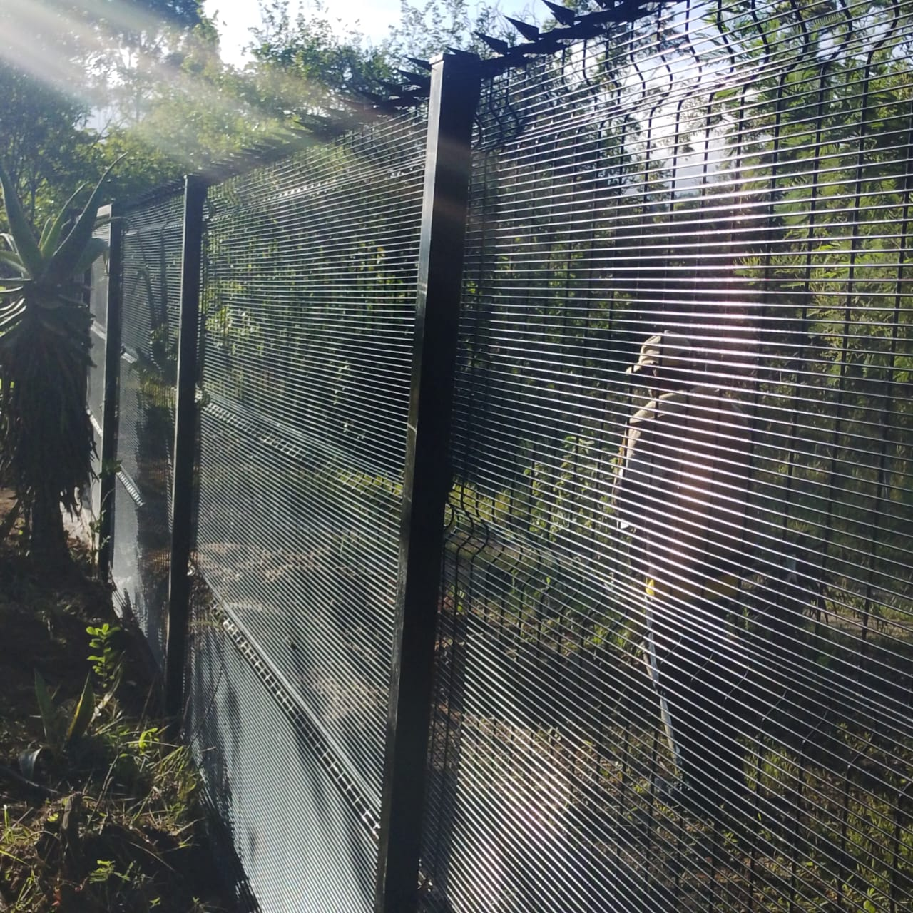

Quick answer
Security upgrades do not automatically raise a selling price, but buyers in Zimbabwe now judge the boundary, gate, lighting, cameras and backup power as part of the home. A sound, well-kept perimeter, a reliable automated gate and systems that keep working in a power cut make a property easier to live in and easier to sell. Plan them together and choose what you can maintain.

What is changing in the market
Zimbabwean property listings and advice increasingly highlight remote-access CCTV, gate automation, motion lighting, alarms and mobile monitoring. Cluster developments promote controlled access, a shared perimeter and surveillance as central benefits. Security is moving from an optional extra to part of what a buyer expects to see.
That does not mean every upgrade adds its cost to the price. It means buyers pay closer attention to how the boundary, entrance and backup systems affect daily life and the risk of owning the home.
What buyers notice at a viewing
| Feature | What it tells a buyer |
|---|---|
| Boundary condition | Whether the property has been looked after |
| Gate and access | How easy and safe it is to come and go |
| Lighting | Whether the property feels safe after dark |
| CCTV and alarms | Whether activity can be seen and acted on |
| Backup power | Whether the systems still work during outages |
1. Security makes a home easier to live in
Opening the gate from the car, seeing who is at the entrance and checking the property from a phone all make daily life easier. This matters to busy families, landlords and diaspora owners who need control over who enters. It works best when the system is simple and reliable for the people who use it every day.
2. Buyers judge the whole approach to risk
Bedrooms and finishes are only part of a viewing. Buyers also notice the street, the state of the boundary, the gate, privacy and how easily the property could be watched or entered. A neglected fence or a gate that does not close properly raises doubts even when the house is well finished. Our boundary checklist helps you spot these issues first.

3. Planned systems feel more complete
A property where the gate, perimeter, lighting, cameras and backup power were planned together feels more deliberate than one with products added piece by piece. That does not need to be complicated: the fence defines the boundary, the gate controls entry, lighting improves visibility and cameras cover what is left. See layered home security.
4. Cluster homes have raised expectations
Many cluster developments combine a shared perimeter, controlled entrances and CCTV, which has made layered security a visible part of how homes are sold. The same approach works for a standalone house, farm or business: define the perimeter, control routine access, improve visibility and decide how unusual activity will be detected and handled.
5. Backup power is now part of the conversation
A smart gate or camera system is less reassuring if it stops working in a power cut. Buyers and owners should ask what keeps running when the grid is off, and how batteries will be maintained. See security during power cuts.
6. Choose what you can maintain
An upgrade that looks impressive but is hard to repair, run or power can become a liability. Before you invest, ask who will maintain it, whether parts are available locally and how it will be tested. Galvanised fencing, a motor matched to the gate's weight and simple, serviceable systems hold their value best.
Plan security as a long-term improvement
Security does not replace location, build quality or infrastructure, but it now sits alongside them as part of what a property offers. Give perimeter and access decisions the same long-term thought as any other improvement.
Sources
- Property.co.zw: Smart Home Features That Increase Property Value in Zimbabwe, 27 May 2026.
- Propertybook: Understanding Cluster Homes in Harare.
- Propertybook: Harare Property Expo 2026: Key Market Takeaways, 1 September 2026.
Get a quote from Azzar
Send us your location, what you need and a few photos. We reply with a recommendation and a no-obligation quote, and arrange a free site assessment if one is needed.